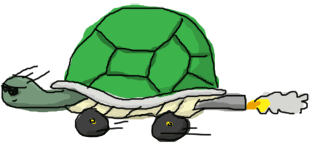

开始尝试
Shell
在Erlang的开发环境中，你可以用模拟器来测试你绝大部分想法；它可以执行你编译好的脚本，同时也准许你时时编辑你的代码。
在Linux中开启一个Erlang的shell非常简单，只需打开一个终端并输入$ erl就可以了。
如果你的Erlang环境已经被配置好，你将会看到以下信息：
Erlang R13B01 (erts-5.7.2) [source] [smp:2:2] [rq:2] [async-threads:0] [hipe] [kernel-poll:false] Eshell V5.7.2 (abort with ^G)
恭喜你，你已经成功的启动了Erlang的shell！
对于Windows用户，你依然可以执行erl.exe来启动shell，
但是我更建议用werl.exe来启动shell，该命令可以从开始菜单中找到（程序 > Erlang）。
Werl是针对Windows实现的shell，它具有独立的可滚动的窗口并且支持命令行编辑（像复制粘贴, 该功能在Windows的cmd.exe中非常不完善)。
即便你重定向输入输出或使用管道，你依然需要Erlang的shell。
(The erl shell is still required if you want to redirect standard input or output, or use pipelines.)
现在我们将进入模拟器并执行代码，但首先，让我们先看看shell提供了什么。
Shell命令
Erlang的shell内置了一个基于Emacs的子集行编辑器，Emacs是一个从70年代就开始被使用且非常流行的编辑器。 如果你知道Emacs，你将会感到非常适应。对于其他人而言，不管如何你会一点点适应的。
首先，如果你输入了一些文本，接着你按了^A （Ctrl+A），你会发现光标移动到当前行的开头。
^E （Ctrl+E） 会让你的光标移动到行尾。你可以使用箭头键进行前进和后退，显示上一行或下一行，这样你可以重用之前的代码。
如果你输入 li 并按下TAB键，shell将会帮你补全为 lists:。 再按一次Tab键，shell将会给出稍后你可能会用到函数的建议。
这就是Erlang补全模块 lists 并给出模块内函数的方式。你也许会感到这种方式很奇怪，但是不用担心，很快你就会适应这种方式了。
我认为我们已经了解很多shell的功能，除了这个：我们如何退出！这里有一个找出如何做这件事情的方法。我们只需要输入 help(). 这样你就能得一堆可以在shell中执行的命令的信息（不要忘记终止符号（.）因为想执行一个命令，这是必须的）。
有一些命令我们将在后面用到，但是目前我们只关注这一行
q() -- quit - shorthand for init:stop()
这是其中的一种方法（事实上，有两种方法）。 但是当shell失去响应，这方法就不行了！如果你很细心，你会发现，当你启动Erlang的shell的时候，有一行提示'aborting with ^G'.
让我们尝试下， 之后按下h来获得帮助！
User switch command --> h c [nn] - connect to job i [nn] - interrupt job k [nn] - kill job j - list all jobs s [shell] - start local shell r [node [shell]] - start remote shell q - quit erlang ? | h - this message -->
如果你按下i接着按下c，Erlang将停止当前正在运行的代码，并回到可响应的shell。
j将列出当前进程列表 （一个星号紧跟一个数字表示，这是当前正在运行的任务），这个正在执行的进程可以用i加上该进程的进程号进行中断。
如果你使用了k，你将杀掉shell进程，而不是中断它。按s可以创建一个新的shell进程
Eshell V5.7.2 (abort with ^G)
1> "OH NO THIS SHELL IS UNRESPONSIVE!!! *hits ctrl+G*"
User switch command
--> k
--> c
Unknown job
--> s
--> j
2* {shell,start,[]}
--> c 2
Eshell V5.7.2 (abort with ^G)
1> "YESS!"
如果你再次阅读帮助信息，你会发现我们可以创建远程shell。现在我不会做更什么的介绍，但是已经可以让你明白Erlang的虚拟机除了可以执行代码之外还能做些什么。 (I won't get into details right now, but this should give you an idea of what the Erlang VM can do apart from running code.) 好了，让我们进行真正的尝试吧。